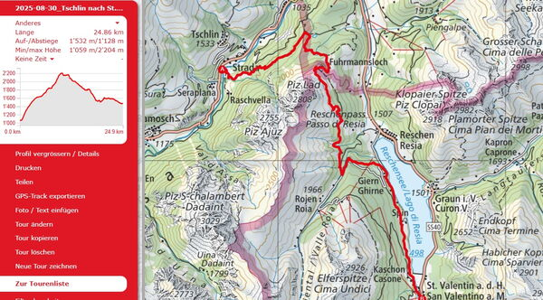
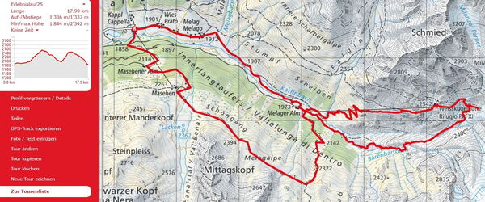
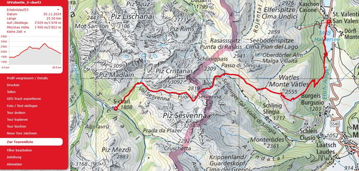

Erlebnislauf 3 Tage
Vom 05. bis 07. September laufen wir in 3 Tagen auf herrlichen Trails
Scuol - Sur En - St.Valentin am Haidersee - Scuol
Wir laufen in 3 Gruppen nach Stärkeklassen. Trailrunning im Wohlfühlbereich. Das Tempo passen wir dem Gelände an und geniessen dabei die schöne Landschaft. Wir haben auch Zeit um Pausen einzulegen. Ist das Gelände eben oder sogar abfallend so sind wir im Laufschritt unterwegs. Steilere Aufwärtspassagen werden auch in zügigem Wanderschritt bewältigt.
Wir logieren im Hotel Ortlerspitz ***s in St. Valentin und geniessen die Vorzüge dieser ausgesuchten Hotelunterkunft mit grosszügigen Räumlichkeiten und feiner regionalen Küche. Am Abend erwartet uns ein 3-Gang Menu und am Morgen ein ausgewogenes, sportlergerechtes Frühstück.
Strada-Reschner Alm-St.Valentin am Haidersee

Freitag, 05. September - Eratzstrecke , da das Val Uina wegen Steinschlag gesperrt ist!
Strada -Reschner Alm - Reschen - St.Valentin am Haidersee
25 Km +1500 /- 1200 hm Daten.gpx / zur Strecke auf SchweizMobil
Wir treffen uns um 07.30 Uhr beim Bahnhofplatz Landquart. Das Gepäck wird verladen und nach St. Valentin transportiert. Um 7.49 Uhr fahren wir mit der Rhätischen Bahn nach Scuol, Umsteigen auf den Bus nach Strada, San Nicla zum Startpunkt. Nach der Gruppeneinteilung laufen wir los in Richtung Palü d'Alp, wir laufen kurz auf Österreichischem Boden am Scharz- und Grünsee vorbei. Bald erreichen wir den Dreiländerpunkt und wir befinden uns im Südtirol. Nach kurzem Abstieg erreichen wir die Rechner Alm und bald darauf Reschen. Weiter dem Reschensee entlang bis zum Tagesziel St.Valentin am Haidersee. Die folgenden 2 Nächte verbringen wir im Hotel Ortlerspitz ***s inklussive Nachtessen und Frühstück. Die Tour für den Folgetag wird nach dem Abendessen besprochen.
Variante bis Reschen
17 Km + 1200 hm / -800 hm Daten gpx / zur Strecke auf Schweiz Mobil
Langtaufers - Aussichtsrunde

Samstag, 06. September
kürzere Strecke : Kappl in Langtaufers - Melager Alm - Weisskugelhütte mit Gletscherblick - Melager Alm - Kappl
13 Km +/-900 hm Daten.gpx / zur Strecke auf SchweizMobil
lägere Strecke: Kappl in Langtaufers - Melager Alm - Weisskugelhütte mit Gletscherblick - Melager Alm - Maseben - Masebener Alm - Kappl
18 Km +/-1300 hm Daten.gpx / zur Strecke auf SchweizMobil
Der zweite Tag starten wir mit einem sportlergerechten Frühstück bevor wir mit dem Bus nach Langtaufers Kappl fahren. Dann starten wir auf eine schöne Aussichtsrunde. Wir laufen dem Karlinbach entlang bis zur Melager Alm, dann folgen 500 hm hoch zur Weisskugelhütte mit Blick auf den Langtauferer Gletscher, dann folgt ein Abstieg zur Melager Alm. Der kürzere Streckenverlauf folgt dem Talboden entlang zurück nach Kappl. Wer mag, macht eine Zusatzsteigung von 400 hm in Richtung Rosskopf und über Schöngang zu Maseben und runter nach Kappl zum Ausgangspunkt. Mit dem Bus fahren wir wieder zurück nach St.Valentin.
St.Valentin - S-charl

Sonntag, 7. September
St.Valentin - Pfaffensee - Sesvennahütte - Fuorcla Sesvenna - Alp Sesvenna - S-charl
25.5 Km +2000 hm / -1600 hm Daten.gpx/ zur Strecke auf SchweizMobil
kürzere Variante: Taufers i.M. Avignatal - Cruschettapass - Alp Platzer - S-charl
15 Km +1000hm / -500 hm Daten.gpx / zur Strecke auf SchweizMobil
Nach dem Frühstück rüsten wir unser Gepäck zum Transport bereit das nach Landquart geführt wird. Wer mag läuft ab St. Valentin die längere Strecke bis nach S-charl. Wer sich für die Gruppe kürzere Variante entscheidet, wird erst eine Postautofahrt nach Taufers im Münstertal geniessen und von da loslaufen, über den Cruschettapass nach S-charl. Hier treffen wir uns alle noch zu einem Abschuss z'Vieri. Mit dem Postauto fahren wir dann los nach Scuol und mit RhB zurück nach Landquart zum Ausganspunkt des Erlebnislaufes. Da sind die Plätze in der Rhätischen Bahn reserviert, sodass wir um 18.10 Uhr in Landquart eintreffen werden.
Leistungen
Folgende Leistungen sind im Teilnehmerbeitrag inbegriffen
- Teilnahme bei Trailrunning in Gruppen mit ortskundigen Laufleitern nach Stärkeklassen ohne Zeitmessung.
- 2 Übernachtungen mit Frühstück und Nachtessen
- Abschluss z'Vieri am Sonntag
- ÖV Ticket Halbtax
- Erinnerungsgeschenk
Treffpunkt am Freitag, 05. September beim Bahnhof Landquart, Bahnhofplatz (Parkmöglichkeit P&Rail Bahnhof). Am Sonntag, 07. September endet der Erlebnislauf nach einem Abschluss z'Vieri in S-charl, und Rückreise nach Landquart Ankunft um 18.10 Uhr.
Anmeldung
aktuell ist keine Anmeldung mehr möglich
Laufleiter
Die Laufleiter werden die Strecken vorgängig ablaufen
Laufleiter begleiten euch


Laufleiter Erlebnislauf
- Marco Jäger
- Petra Jäger
- Brigitte Eggerling
- Michi Gisler
- Iris Capatt
- Martin Lädi Ledermann
- Sven Peverelli
Teilnehmer Erlebnislauf
- Rolf & Katharina
- Peter & Monica
- Ursula
- Urs
- Micheline
- Barbara M.
- Marianne
- Irene
- Silvia mit Enya
- Markus B.
- Jean-Marie
- Michel
- Noldi
- Barbara R.
- Andreas
- Bernhard
- Röbi, Maria
- Jörg & Jolanda
- Ruedi
- Johannes
- Corina